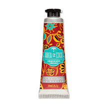
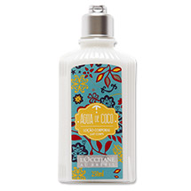
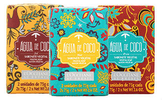

Creme de mãos
Inspirado na Água de Coco, ingrediente que refresca os dias quentes de verão, este creme de mãos traz um toque macio e aveludado para a pele, deixando-a hidratada e perfumada com uma delicada fragrância aromática frutada.

loção desodorante corporal
Inspirada na refrescância da Água de Coco, esta loção corporal é rapidamente absorvida pela pele, deixando-a desodorizada, hidratada e perfumada com uma fragrância aromática frutada. Contém extrato de Coco.

sabonete vegetal 2 unidades
Inspirada na Água de Coco, ingrediente que refresca os dias quentes de verão, a coleção une a exuberância das praias, a energia do sol e a riqueza do mar.